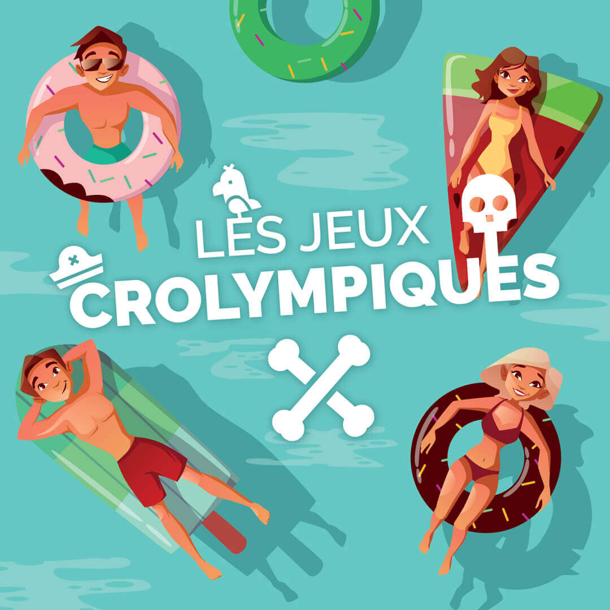

Oyez oyez, moussaillons !
Après quatre années de bons et loyaux services dans sa taverne, le redouté Capitaine Cro avait clairement tourné la page. Son quotidien était certes désormais plus monotone — encore que —, mais il s'en satisfaisait pleinement.
Et pourtant ce matin-là, il sentit de nouveau l'appel du large gronder dans ses veines. Les vents murmuraient son nom, les vagues réclamaient son sillage… et voilà qu'une étrange missive, portée par une mouette dorée, et scellée d'un cachet alambiqué, vint définitivement troubler la quiétude de sa promenade.
Curieux, il ne put évidemment résister à la lire et quelle ne fut pas sa surprise ! Les plus valeureux pirates étaient conviés à s'affronter lors de joutes uniques, sous le regard des dieux eux-mêmes — rien que ça —.
Entre monstres des abysses, rivaux sans pitié et caprices des cieux, nombreux sont ceux qui ne reverraient jamais la terre ferme… Mais pour ceux qui survivraient, des trésors si fabuleux qu'aucune carte n'en porte la trace, des richesses capables de faire pâlir les légendes, et une gloire tout simplement éternelle.
Le Capitaine Cro n'est pas homme à ignorer un tel défi, et sa décision fut instantanément prise : la taverne peut bien fermer quelques jours, l'aventure, elle, n'attend jamais !
Que l'équipage se rassemble, que les voiles soient hissées, les sabres soient affûtés et le rhum chargé ! Nous levons l'ancre à l'aube, cap vers l'inconnu, car l'aventure nous appelle, et — par mille sabords — nous répondrons présents !

Concrètement, pour cette nouvelle aventure :
- 12 épreuves au programme (délai variable entre chaque "début", et, pas de pression, vous aurez quelques jours pour jouer pour ceux qui ne seraient pas disponibles dans la minute )
- Une seule chance à chaque fois (merci de bien utiliser exactement le même pseudo qu'ici, et je compte sur vous pour ne pas tricher… )
- Un classement sera établi par épreuve (score inversé pour les 10 premiers : 1er = 10 points, 2ème = 9 points, …, 10ième = 1 point, 11ième+ = 0 point)
- Un classement final (somme des scores de chaque épreuve) à l'issue du jeu, avec le couronnement d'un pirate légendaire !
Première épreuve, demain !